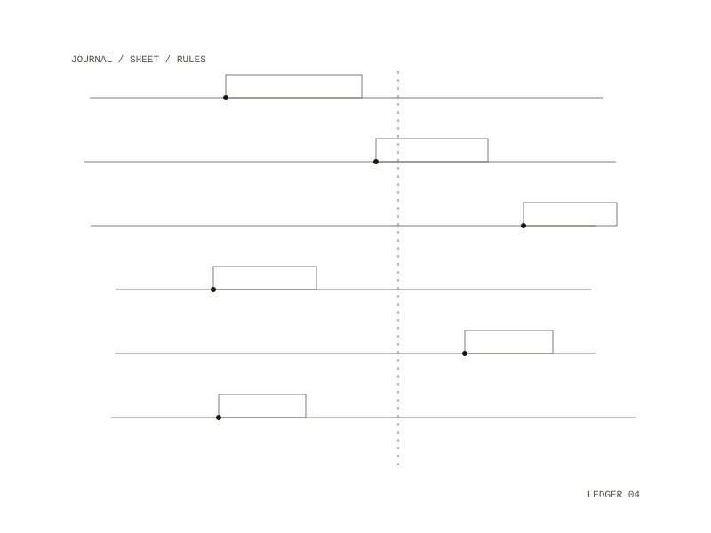

MoneyMachine
MoneyMachine analyzes a journal of options trades and grows in stages into a daily watch-sheet, then an alert engine, then automated execution. Each stage gates money: no code path can place an order before the paper stage, and live trading would need an explicit per-strategy switch plus hard limits enforced in code before any order call.

The journal
The broker's activity statement is imported into an append-only journal; a correction is a new entry, never an edit. Every subtotal row must equal the sum of its fills exactly, or nothing is written. Money uses decimal types, never floating point, and a mismatch is a failure rather than a warning. Fills are grouped into lifecycles from flat to open to flat and scored by cash result, and option legs opened within ten minutes of an opposite-direction leg on the same underlying are marked as spread legs.
The daily sheet
The strategy is to sell short-dated puts on names worth owning, close them early, add protection only when it reduces margin, and let a margin budget decide whether a trade can be placed at all. The budget has eight rules, covering margin use, total short-put and stock exposure, assignment on one name, whether an assignment is survivable, counting only settled cash, choosing what to cut before the broker does, a crash test where every name gaps down at once, and exposure to one sector. The rules apply to the day's ideas together, so taking every idea on the sheet still fits. Ideas a rule turns away are kept, with the rule they break and by how much, so the rules themselves can be judged.
The broker connection uses only the broker's own client and answers read-only requests; tests ban every order, cancel and exercise call. Two further strategies, condors around the open-interest peak and structures chosen from market signals, run on paper only.
Learning without fooling itself
Patterns found in the journal are written down as hypotheses, not rules, and scored only on trades opened after the date they were registered. A strategy change needs at least 30 closed trades in each group, one change a week at most, and a logged entry; contradicted hypotheses stay on the register, and the risk rules are never loosened on this evidence alone.
Dashboard
A local dashboard shows the day's ideas with a "Would breach" section, the rules and what each stopped, risk and positions, what changed since the last scan, and the archive. It has no JavaScript and makes no external requests, and it answers only GET: scanning, importing and reviewing stay on the command line.
analysis, daily sheet, alerts, paper, live
Rust and Python in Docker, with a read-only local dashboard